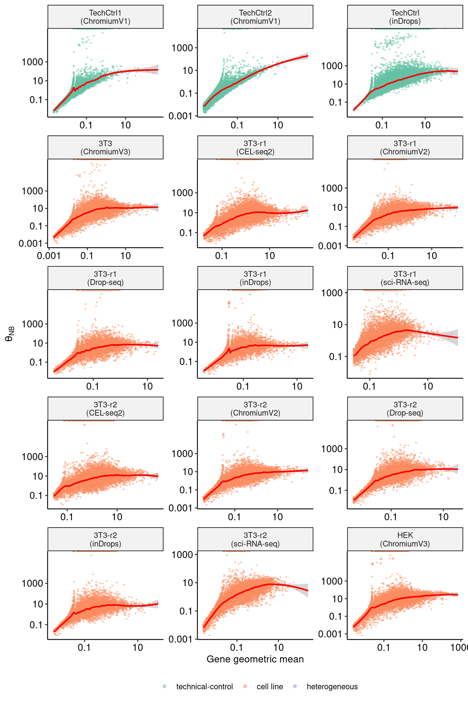
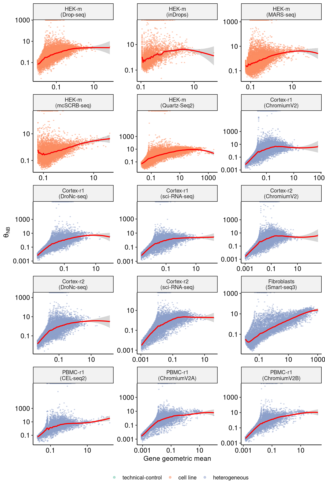
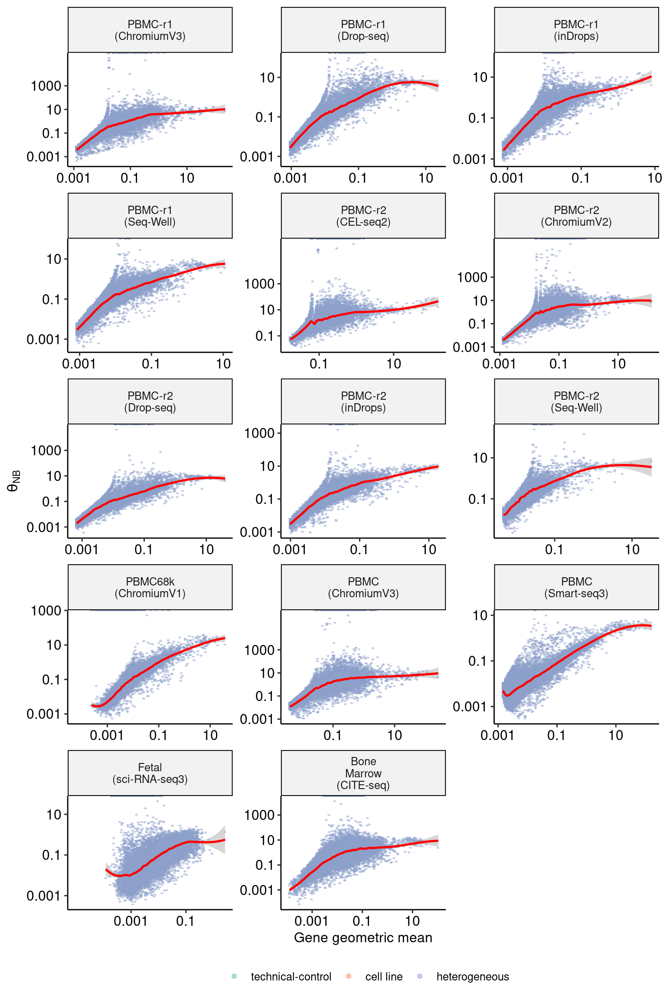

Last updated: 2021-07-07
Checks: 7 0
Knit directory: scRNA_NB_comparison/
This reproducible R Markdown analysis was created with workflowr (version 1.6.2). The Checks tab describes the reproducibility checks that were applied when the results were created. The Past versions tab lists the development history.
Great! Since the R Markdown file has been committed to the Git repository, you know the exact version of the code that produced these results.
Great job! The global environment was empty. Objects defined in the global environment can affect the analysis in your R Markdown file in unknown ways. For reproduciblity it’s best to always run the code in an empty environment.
The command set.seed(20210706) was run prior to running the code in the R Markdown file. Setting a seed ensures that any results that rely on randomness, e.g. subsampling or permutations, are reproducible.
Great job! Recording the operating system, R version, and package versions is critical for reproducibility.
Nice! There were no cached chunks for this analysis, so you can be confident that you successfully produced the results during this run.
Great job! Using relative paths to the files within your workflowr project makes it easier to run your code on other machines.
Great! You are using Git for version control. Tracking code development and connecting the code version to the results is critical for reproducibility.
The results in this page were generated with repository version 052425f. See the Past versions tab to see a history of the changes made to the R Markdown and HTML files.
Note that you need to be careful to ensure that all relevant files for the analysis have been committed to Git prior to generating the results (you can use wflow_publish or wflow_git_commit). workflowr only checks the R Markdown file, but you know if there are other scripts or data files that it depends on. Below is the status of the Git repository when the results were generated:
Ignored files:
Ignored: data/raw_data/
Ignored: data/rds_filtered/
Ignored: data/rds_raw/
Ignored: data/sampled_counts/
Ignored: output/snakemake_output/
Untracked files:
Untracked: output/figures/
Untracked: output/tables/
Note that any generated files, e.g. HTML, png, CSS, etc., are not included in this status report because it is ok for generated content to have uncommitted changes.
These are the previous versions of the repository in which changes were made to the R Markdown (analysis/13_SuppFigure-VST.Rmd) and HTML (docs/13_SuppFigure-VST.html) files. If you’ve configured a remote Git repository (see ?wflow_git_remote), click on the hyperlinks in the table below to view the files as they were in that past version.
| File | Version | Author | Date | Message |
|---|---|---|---|---|
| Rmd | 052425f | Saket Choudhary | 2021-07-07 | Update template |
| Rmd | 400797a | Saket Choudhary | 2021-07-06 | workflowr::wflow_git_commit(all = TRUE) |
| html | 400797a | Saket Choudhary | 2021-07-06 | workflowr::wflow_git_commit(all = TRUE) |
datasets <- readr::read_csv(here::here("data", "datasets.csv"), col_types = readr::cols())
datasets$key_cleaned <- clean_keys(datasets$key)
dataset_keys <- datasets$key
datasets$datatype <- factor(datasets$datatype, levels = c("technical-control", "cell line", "heterogeneous"))
datasets <- datasets %>% arrange(datatype)
datasets# A tibble: 58 x 7
key sample_name technology tissue datatype raw_data key_cleaned
<chr> <chr> <chr> <chr> <fct> <chr> <chr>
1 Technic… TechCtrl1 (C… ChromiumV1 TechC… technic… https://data… TechnicalCo…
2 Technic… TechCtrl2 (C… ChromiumV1 TechC… technic… https://data… TechnicalCo…
3 Technic… TechCtrl (in… inDrops TechC… technic… https://data… TechnicalCo…
4 3T3__Ch… 3T3 (Chromiu… ChromiumV3 3T3 cell li… https://data… 3T3__Chromi…
5 Ding-Mo… 3T3-r1 (CEL-… CEL-seq2 3T3 cell li… https://www.… Ding-MouseM…
6 Ding-Mo… 3T3-r1 (Chro… ChromiumV2 3T3 cell li… https://www.… Ding-MouseM…
7 Ding-Mo… 3T3-r1 (Drop… Drop-seq 3T3 cell li… https://www.… Ding-MouseM…
8 Ding-Mo… 3T3-r1 (inDr… inDrops 3T3 cell li… https://www.… Ding-MouseM…
9 Ding-Mo… 3T3-r1 (sci-… sci-RNA-seq 3T3 cell li… https://www.… Ding-MouseM…
10 Ding-Mo… 3T3-r2 (CEL-… CEL-seq2 3T3 cell li… https://www.… Ding-MouseM…
# … with 48 more rowscolors <- brewer.pal(3, "Set2")
names(colors) <- c("technical-control", "cell line", "heterogeneous")sct_thetas <- lapply(dataset_keys, FUN = function(x) {
theta_file <- here::here("output", "snakemake_output", "seurat_output", clean_keys(x), "vst2", "gene_attr.csv")
if (file.exists(theta_file)) {
theta_df <- read.csv(theta_file)
theta_df$key <- x
return(theta_df)
} else {
message(x)
return(NULL)
}
})
sct_thetas_df <- bind_rows(sct_thetas, .id = "dataset")
sct_thetas_df <- left_join(sct_thetas_df, datasets)
sct_thetas_df <- sct_thetas_df %>% arrange(datatype) # , key, technology)
sct_thetas_df$sample_name <- factor(sct_thetas_df$sample_name, levels = datasets$sample_name)
head(sct_thetas_df) dataset X detection_rate gmean variance residual_mean
1 1 TSPAN6 0.010555556 0.007343385 0.010449941 NA
2 1 DPM1 0.063888889 0.046754565 0.074336360 0.0085481282
3 1 SCYL3 0.007222222 0.005018614 0.007174047 0.0008756664
4 1 CFH 0.008888889 0.006180328 0.008814774 NA
5 1 FUCA2 0.029444444 0.020848957 0.030227904 NA
6 1 GCLC 0.015555556 0.010840628 0.015322093 NA
residual_variance theta X.Intercept. log_umi genes_log_gmean_step1
1 0.9831252 Inf -12.26490 2.302585 FALSE
2 1.0959593 1.4916865 -10.43726 2.302585 TRUE
3 1.0402916 Inf -12.64439 2.302585 FALSE
4 0.9232869 Inf -12.43675 2.302585 FALSE
5 0.9111448 0.6253993 -11.22857 2.302585 TRUE
6 0.9496819 Inf -11.87714 2.302585 FALSE
step1_theta step1_.Intercept. step1_log_umi key
1 NA NA NA TechnicalControl1__ChromiumV1
2 1.030067 -10.40856 2.302585 TechnicalControl1__ChromiumV1
3 NA NA NA TechnicalControl1__ChromiumV1
4 NA NA NA TechnicalControl1__ChromiumV1
5 7.253456 -11.22535 2.302585 TechnicalControl1__ChromiumV1
6 NA NA NA TechnicalControl1__ChromiumV1
sample_name technology tissue datatype
1 TechCtrl1 (ChromiumV1) ChromiumV1 TechControl technical-control
2 TechCtrl1 (ChromiumV1) ChromiumV1 TechControl technical-control
3 TechCtrl1 (ChromiumV1) ChromiumV1 TechControl technical-control
4 TechCtrl1 (ChromiumV1) ChromiumV1 TechControl technical-control
5 TechCtrl1 (ChromiumV1) ChromiumV1 TechControl technical-control
6 TechCtrl1 (ChromiumV1) ChromiumV1 TechControl technical-control
raw_data key_cleaned
1 https://data.caltech.edu/records/1264 TechnicalControl1__ChromiumV1
2 https://data.caltech.edu/records/1264 TechnicalControl1__ChromiumV1
3 https://data.caltech.edu/records/1264 TechnicalControl1__ChromiumV1
4 https://data.caltech.edu/records/1264 TechnicalControl1__ChromiumV1
5 https://data.caltech.edu/records/1264 TechnicalControl1__ChromiumV1
6 https://data.caltech.edu/records/1264 TechnicalControl1__ChromiumV1top_genes <- list()
NTOP <- 10
for (key in dataset_keys) {
data_subset <- sct_thetas_df[sct_thetas_df$key == key, ]
data_subset$gene <- data_subset$X
top_genes[[key]] <- subset(data_subset, rank(-residual_variance) <= NTOP)
}
top_genes_df <- bind_rows(top_genes, .id = "sample_nameX")DoPlot <- function(sample_name) {
sct_thetas_df_subset1 <- sct_thetas_df[sct_thetas_df$sample_name == sample_name, ]
max_resvar <- max(sct_thetas_df_subset1$residual_variance) + 30
top20_df_subset1 <- top_genes_df[top_genes_df$sample_name == sample_name, ]
p <- ggplot(sct_thetas_df_subset1, aes(gmean, residual_variance)) +
geom_scattermore(pointsize = 4, shape = 16, alpha = 0.5, color = "#43a2ca") +
geom_smooth(color = "red", method = "loess", span = 0.1, size = 0.9, formula = "y ~ x") +
geom_hline(yintercept = 1, color = "darkgreen", size = 0.9, linetype = "dashed") +
geom_point(data = top20_df_subset1, size = 0.6, shape = 16, alpha = 1.0, color = "deeppink") +
geom_text_repel(
data = top20_df_subset1, aes(label = gene), size = 2.2, color = "gray25",
nudge_y = max_resvar - top20_df_subset1$residual_variance,
direction = "x",
angle = 90,
vjust = 0.5,
hjust = 0.5,
segment.size = 0.2,
segment.alpha = 0.2
) +
scale_y_continuous(trans = "sqrt", breaks = c(0, 1, 10, 25, 50, 100, 150), limits = c(0, max_resvar + 1)) +
scale_x_continuous(trans = "log10", breaks = c(0.001, 0.01, 0.1, 1, 10, 100), labels = MASS::rational) +
xlab("Gene mean") +
ylab("Residual variance") +
theme_pubr() +
theme(
legend.position = "none"
) +
ggtitle(sample_name)
p
}
split_keys <- split(datasets$sample_name, ceiling(seq_along(dataset_keys) / 15))
for (index in names(split_keys)) {
keys <- split_keys[[index]]
i <- 1
plots <- list()
for (key in keys) {
px <- DoPlot(key)
plots[[i]] <- px
i <- i + 1
}
p <- wrap_plots(plots, ncol = 3)
p
ggsave(here::here("output", "figures", paste0("SCT2_variance_stabilization-", index, ".pdf")), width = 12, height = 15)
}DoMuThetaPlot <- function(sct_thetas_df_subset){
p <- ggplot(sct_thetas_df_subset, aes(gmean, step1_theta, color = datatype)) +
scale_color_manual(values = colors, name = "") +
geom_scattermore(pointsize = 4, alpha = 0.5) +
geom_smooth(color = "red", method = "loess", span = 0.1, size = 0.9, formula = "y ~ x") + # , se = FALSE) +
facet_wrap(~sample_name, scales = "free", ncol = 3, labeller = label_wrap_gen(width = 10)) +
scale_x_continuous(trans = "log10", breaks = c(0.001, 0.1, 10, 1000), labels = MASS::rational) +
scale_y_continuous(trans = "log10", breaks = c(0.001, 0.1, 10, 1000), labels = MASS::rational) +
theme_pubr() +
theme(
legend.position = "bottom",
legend.direction = "horizontal",
legend.background = element_blank()
) +
guides(col = guide_legend(ncol = 3)) +
xlab("Gene geometric mean") +
ylab(expression(theta[NB]))
p
}
sct_thetas_df_subset <- sct_thetas_df[sct_thetas_df$sample_name %in% datasets$sample_name[1:15],]
p1 <- DoMuThetaPlot(sct_thetas_df_subset)
p1
| Version | Author | Date |
|---|---|---|
| 400797a | Saket Choudhary | 2021-07-06 |
ggsave(here::here("output", "figures", "SCT_theta_unregularized1.pdf"), width = 12, height = 15, dpi = "print")
sct_thetas_df_subset <- sct_thetas_df[sct_thetas_df$sample_name %in% datasets$sample_name[16:30],]
p2 <- DoMuThetaPlot(sct_thetas_df_subset)
p2
| Version | Author | Date |
|---|---|---|
| 400797a | Saket Choudhary | 2021-07-06 |
ggsave(here::here("output", "figures", "SCT_theta_unregularized2.pdf"), width = 12, height = 15, dpi = "print")
sct_thetas_df_subset <- sct_thetas_df[sct_thetas_df$sample_name %in% datasets$sample_name[31:45],]
p3 <- DoMuThetaPlot(sct_thetas_df_subset)
p3
| Version | Author | Date |
|---|---|---|
| 400797a | Saket Choudhary | 2021-07-06 |
ggsave(here::here("output", "figures", "SCT_theta_unregularized3.pdf"), width = 12, height = 15, dpi = "print")
sct_thetas_df_subset <- sct_thetas_df[sct_thetas_df$sample_name %in% datasets$sample_name[46:58],]
p5 <- DoMuThetaPlot(sct_thetas_df_subset)
p5
| Version | Author | Date |
|---|---|---|
| 400797a | Saket Choudhary | 2021-07-06 |
ggsave(here::here("output", "figures", "SCT_theta_unregularized4.pdf"), width = 12, height = 15, dpi = "print")sct_thetas <- lapply(dataset_keys, FUN = function(x) {
sct_theta_local <- list()
for (method in c("offset-Inf", "offset-100", "offset-10", "vst2")) {
theta_file <- here::here("output", "snakemake_output", "seurat_output", clean_keys(x), method, "gene_attr.csv")
if (file.exists(theta_file)) {
theta_df <- read.csv(theta_file)
theta_df$key <- x
sct_theta_local[[method]] <- theta_df
}
}
if (length(names(sct_theta_local)) >= 1) {
sct_theta <- bind_rows(sct_theta_local, .id = "method")
return(sct_theta)
}
return(NULL)
})
sct_thetas_df <- bind_rows(sct_thetas, .id = "dataset")
sct_thetas_df <- left_join(sct_thetas_df, datasets)
sct_thetas_df <- sct_thetas_df %>% arrange(datatype)
methods <- c(
"offset-Inf", "offset-100",
"offset-10", "vst2"
)
names(methods) <- c(
paste("theta==infinity"),
paste("theta==100"),
paste("theta==10"),
paste("SCT")
)
sct_thetas_df$method <- factor(sct_thetas_df$method, levels = methods, labels = names(methods))
sct_thetas_df$sample_name <- factor(sct_thetas_df$sample_name, levels = datasets$sample_name)length(unique(sct_thetas_df$key))[1] 58global_labeller <- labeller(
sample_name = label_wrap_gen(8),
method = label_parsed
)
DoPlot <- function(gene_attrs_df) {
p <- ggplot(gene_attrs_df, aes(gmean, residual_variance)) +
geom_scattermore(pointsize = 1.1, shape = 16, alpha = 0.5) +
geom_hline(yintercept = 1, color = "#4daf4a", size = 0.9, linetype = "dashed") +
geom_smooth(aes(color = "red"), method = "loess", span = 0.1, size = 0.9, formula = "y ~ x") +
scale_y_continuous(trans = "sqrt", breaks = c(0, 1, 10, 25, 50, 100, 150), limits = c(0, max_resvar + 1)) +
scale_x_continuous(trans = "log10", breaks = c(0.01, 1, 100), labels = MASS::rational) +
facet_grid(sample_name ~ method, labeller = global_labeller) +
xlab("Gene mean") +
ylab("Residual variance") +
plot_layout(guides = "collect") & theme(
legend.position = "none",
legend.key = element_rect(fill = NA),
legend.background = element_blank()
)
return(p)
}
split_keys <- split(dataset_keys, ceiling(seq_along(dataset_keys) / 10))
for (index in names(split_keys)) {
keys <- split_keys[[index]]
gene_attrs_df <- sct_thetas_df[sct_thetas_df$key %in% keys, ]
max_resvar <- 25
p1 <- DoPlot(gene_attrs_df)
p1
dir.create(here::here("output", "figures"), showWarnings = F)
ggsave(here::here("output", "figures", paste0("full_residvar-", index, ".pdf")), width = 8, height = 12, dpi = "print")
}sessionInfo()R version 4.0.0 (2020-04-24)
Platform: x86_64-pc-linux-gnu (64-bit)
Running under: Ubuntu 18.04.5 LTS
Matrix products: default
BLAS: /usr/lib/x86_64-linux-gnu/blas/libblas.so.3.7.1
LAPACK: /usr/lib/x86_64-linux-gnu/lapack/liblapack.so.3.7.1
locale:
[1] LC_CTYPE=en_US.UTF-8 LC_NUMERIC=C
[3] LC_TIME=en_US.UTF-8 LC_COLLATE=en_US.UTF-8
[5] LC_MONETARY=en_US.UTF-8 LC_MESSAGES=en_US.UTF-8
[7] LC_PAPER=en_US.UTF-8 LC_NAME=C
[9] LC_ADDRESS=C LC_TELEPHONE=C
[11] LC_MEASUREMENT=en_US.UTF-8 LC_IDENTIFICATION=C
attached base packages:
[1] stats graphics grDevices utils datasets methods base
other attached packages:
[1] scattermore_0.7 reshape2_1.4.4 readr_1.4.0 RColorBrewer_1.1-2
[5] patchwork_1.1.1 here_1.0.1 ggridges_0.5.3 ggrepel_0.9.1
[9] ggpubr_0.4.0 ggplot2_3.3.5 dplyr_1.0.7 workflowr_1.6.2
loaded via a namespace (and not attached):
[1] sass_0.4.0 tidyr_1.1.3 jsonlite_1.7.2 splines_4.0.0
[5] carData_3.0-4 bslib_0.2.5.1 assertthat_0.2.1 highr_0.8
[9] cellranger_1.1.0 yaml_2.2.1 lattice_0.20-41 pillar_1.6.1
[13] backports_1.2.1 glue_1.4.2 digest_0.6.27 promises_1.2.0.1
[17] ggsignif_0.6.2 colorspace_2.0-2 Matrix_1.3-4 htmltools_0.5.1.1
[21] httpuv_1.6.1 plyr_1.8.6 pkgconfig_2.0.3 broom_0.7.8
[25] haven_2.4.1 purrr_0.3.4 scales_1.1.1 whisker_0.4
[29] openxlsx_4.2.4 later_1.2.0 rio_0.5.27 git2r_0.26.1
[33] tibble_3.1.2 mgcv_1.8-33 farver_2.1.0 generics_0.1.0
[37] car_3.0-10 ellipsis_0.3.2 withr_2.4.2 cli_2.5.0
[41] magrittr_2.0.1 crayon_1.4.1 readxl_1.3.1 evaluate_0.14
[45] fs_1.5.0 fansi_0.5.0 nlme_3.1-152 MASS_7.3-51.6
[49] rstatix_0.7.0 forcats_0.5.1 foreign_0.8-79 textshaping_0.3.5
[53] tools_4.0.0 data.table_1.14.0 hms_1.1.0 lifecycle_1.0.0
[57] stringr_1.4.0 munsell_0.5.0 zip_2.2.0 compiler_4.0.0
[61] jquerylib_0.1.4 systemfonts_1.0.2 rlang_0.4.11 grid_4.0.0
[65] rstudioapi_0.13 rmarkdown_2.9 gtable_0.3.0 abind_1.4-5
[69] DBI_1.1.1 curl_4.3.2 R6_2.5.0 knitr_1.33
[73] utf8_1.2.1 rprojroot_2.0.2 ragg_1.1.3 stringi_1.6.2
[77] Rcpp_1.0.6 vctrs_0.3.8 tidyselect_1.1.1 xfun_0.24
sessionInfo()R version 4.0.0 (2020-04-24)
Platform: x86_64-pc-linux-gnu (64-bit)
Running under: Ubuntu 18.04.5 LTS
Matrix products: default
BLAS: /usr/lib/x86_64-linux-gnu/blas/libblas.so.3.7.1
LAPACK: /usr/lib/x86_64-linux-gnu/lapack/liblapack.so.3.7.1
locale:
[1] LC_CTYPE=en_US.UTF-8 LC_NUMERIC=C
[3] LC_TIME=en_US.UTF-8 LC_COLLATE=en_US.UTF-8
[5] LC_MONETARY=en_US.UTF-8 LC_MESSAGES=en_US.UTF-8
[7] LC_PAPER=en_US.UTF-8 LC_NAME=C
[9] LC_ADDRESS=C LC_TELEPHONE=C
[11] LC_MEASUREMENT=en_US.UTF-8 LC_IDENTIFICATION=C
attached base packages:
[1] stats graphics grDevices utils datasets methods base
other attached packages:
[1] scattermore_0.7 reshape2_1.4.4 readr_1.4.0 RColorBrewer_1.1-2
[5] patchwork_1.1.1 here_1.0.1 ggridges_0.5.3 ggrepel_0.9.1
[9] ggpubr_0.4.0 ggplot2_3.3.5 dplyr_1.0.7 workflowr_1.6.2
loaded via a namespace (and not attached):
[1] sass_0.4.0 tidyr_1.1.3 jsonlite_1.7.2 splines_4.0.0
[5] carData_3.0-4 bslib_0.2.5.1 assertthat_0.2.1 highr_0.8
[9] cellranger_1.1.0 yaml_2.2.1 lattice_0.20-41 pillar_1.6.1
[13] backports_1.2.1 glue_1.4.2 digest_0.6.27 promises_1.2.0.1
[17] ggsignif_0.6.2 colorspace_2.0-2 Matrix_1.3-4 htmltools_0.5.1.1
[21] httpuv_1.6.1 plyr_1.8.6 pkgconfig_2.0.3 broom_0.7.8
[25] haven_2.4.1 purrr_0.3.4 scales_1.1.1 whisker_0.4
[29] openxlsx_4.2.4 later_1.2.0 rio_0.5.27 git2r_0.26.1
[33] tibble_3.1.2 mgcv_1.8-33 farver_2.1.0 generics_0.1.0
[37] car_3.0-10 ellipsis_0.3.2 withr_2.4.2 cli_2.5.0
[41] magrittr_2.0.1 crayon_1.4.1 readxl_1.3.1 evaluate_0.14
[45] fs_1.5.0 fansi_0.5.0 nlme_3.1-152 MASS_7.3-51.6
[49] rstatix_0.7.0 forcats_0.5.1 foreign_0.8-79 textshaping_0.3.5
[53] tools_4.0.0 data.table_1.14.0 hms_1.1.0 lifecycle_1.0.0
[57] stringr_1.4.0 munsell_0.5.0 zip_2.2.0 compiler_4.0.0
[61] jquerylib_0.1.4 systemfonts_1.0.2 rlang_0.4.11 grid_4.0.0
[65] rstudioapi_0.13 rmarkdown_2.9 gtable_0.3.0 abind_1.4-5
[69] DBI_1.1.1 curl_4.3.2 R6_2.5.0 knitr_1.33
[73] utf8_1.2.1 rprojroot_2.0.2 ragg_1.1.3 stringi_1.6.2
[77] Rcpp_1.0.6 vctrs_0.3.8 tidyselect_1.1.1 xfun_0.24